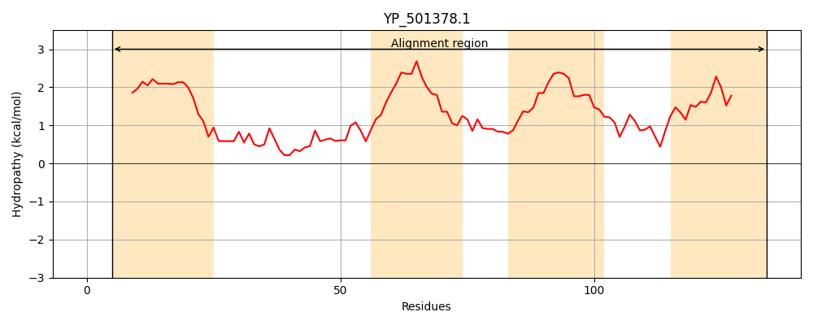
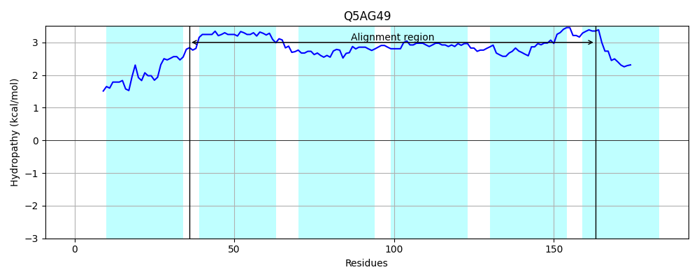
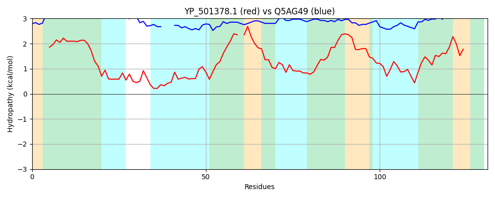

Hit Accession: Q5AG49
Hit TCID: 9.B.14.1.12
Hit Description: gnl|BL_ORD_ID|14268 gnl|TC-DB|Q5AG49|9.B.14.1.12 Putative uncharacterized protein OS=Candida albicans (strain SC5314 / ATCC MYA-2876) GN=CaO19.4331 PE=4 SV=1
Mach Len: 131
e:0.000216
Query TMS Count : 4
Hit TMS Count: 6
TMS-Overlap Score: 3.150000
Predicted Substrates:None
BLAST Alignment:
| Protein Hydropathy Plots: | |
|---|---|
|  |  |
Pairwise Alignment-Hydropathy Plot: | |
|  | |